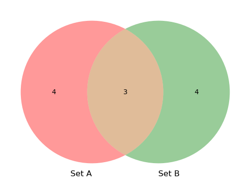
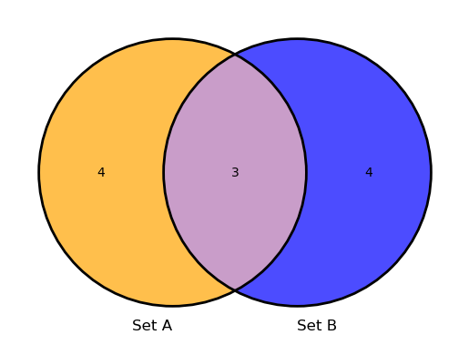

Himpunan dalam Python adalah struktur data yang dapat memuat nilai Python lainnya.
Himpunan dalam Python adalah objek yang dapat kita ulangi menggunakan pernyataan for untuk melakukan sesuatu pada setiap anggota set.
Kita dapat membuat set menggunakan set \(display\), yang memiliki bentuk yang sama dengan tampilan list
himpunanA={ 1, 3, 5 }
himpunanA.add(6)
himpunanA
{1, 3, 5, 6}
!pip install sympy
Requirement already satisfied: sympy in /opt/conda/lib/python3.11/site-packages (1.13.3)
Requirement already satisfied: mpmath<1.4,>=1.1.0 in /opt/conda/lib/python3.11/site-packages (from sympy) (1.3.0)
from sympy import FiniteSet
colors = FiniteSet("purple",
"black","blue", "green" ,"brown")
print(colors)
{black, blue, brown, green, purple}
from fractions import Fraction
a = FiniteSet(Fraction(7,11),5,3.5)
print(a)
{7/11, 3.5, 5}
from sympy import FiniteSet
w = FiniteSet(9,4,20,15,9,13,17)
print(w)
# for printing cardinality of
print ("length = ",len(w))
{4, 9, 13, 15, 17, 20}
length = 6
from sympy import FiniteSet
s = FiniteSet(1,5,9,8,6)
print( "2 in s : ",2in s )
print("8 in s : ",8in s)
2 in s : False
8 in s : True
<>:3: SyntaxWarning: invalid decimal literal
<>:4: SyntaxWarning: invalid decimal literal
<>:3: SyntaxWarning: invalid decimal literal
<>:4: SyntaxWarning: invalid decimal literal
/tmp/ipykernel_974/2532859089.py:3: SyntaxWarning: invalid decimal literal
print( "2 in s : ",2in s )
/tmp/ipykernel_974/2532859089.py:4: SyntaxWarning: invalid decimal literal
print("8 in s : ",8in s)
from sympy import FiniteSet
#empty set
es = FiniteSet()
print(es)
EmptySet
from sympy import FiniteSet
A = FiniteSet(1,2,3)
print("Set A: ",A)
B= FiniteSet(1,2,3,4)
print("Set B: ",B)
C= FiniteSet()
print("Set C: ",C)
print("A.is_subset(B):",A.is_subset(B))
print("B.is_subset(A):",B.is_subset(A))
print("C.is_subset(A):",C.is_subset(A))
print("A.is_subset(C):",A.is_subset(C))
print("C.is_subset(B):",C.is_subset(B))
Set A: {1, 2, 3}
Set B: {1, 2, 3, 4}
Set C: EmptySet
A.is_subset(B): True
B.is_subset(A): False
C.is_subset(A): True
A.is_subset(C): False
C.is_subset(B): True
from sympy import FiniteSet
A= FiniteSet(1,2,3)
B= FiniteSet(1,2,3,4)
C= FiniteSet()
print ("A.is_superset(B): ",A.is_superset(B))
print ("B.is_superset(A):",B.is_superset(A))
print ("A.is_superset(C):",A.is_superset(C))
print ("C.is_superset(A):",C.is_superset(A))
A.is_superset(B): False
B.is_superset(A): True
A.is_superset(C): True
C.is_superset(A): False
from sympy import FiniteSet
s= FiniteSet(1,2,3)
Power_set = A.powerset()
print("Length of Power Set",
len(Power_set))
Power_set
Length of Power Set 8
\[\displaystyle \left\{\emptyset, \left\{1\right\}, \left\{2\right\}, \left\{3\right\}, \left\{1, 2\right\}, \left\{1, 3\right\}, \left\{2, 3\right\}, \left\{1, 2, 3\right\}\right\}\]
from sympy import FiniteSet
A= FiniteSet(1,3,5)
D= FiniteSet(1,2,3,4,5,6)
print("A.is_proper_subset(D): ",A.is_proper_subset(D))
print("D.is_proper_subset(A): ",D.is_proper_subset(A))
A.is_proper_subset(D): True
D.is_proper_subset(A): False
from sympy import FiniteSet
P= FiniteSet(3,4,5,6)
Q= FiniteSet(6,4,8,9,10)
R= FiniteSet(2,11,6,7,2)
print("P.union(Q):\n",P.union(Q))
print("P.union(Q).union(R):\n",P.union(Q).union(R))
P.union(Q):
{3, 4, 5, 6, 8, 9, 10}
P.union(Q).union(R):
{2, 3, 4, 5, 6, 7, 8, 9, 10, 11}
from sympy import FiniteSet
P= FiniteSet(3,4,5,6)
Q= FiniteSet(6,4,8,9,10)
R= FiniteSet(2,11,6,7,2)
print("P.intersect(Q):\n",P.intersect(Q))
print("P.intersect(Q).intersect(R):\n",P.intersect(Q).intersect(R))
P.intersect(Q):
{4, 6}
P.intersect(Q).intersect(R):
{6}
from sympy import FiniteSet
A=FiniteSet(1,2)
B=FiniteSet(8,9)
z= A*B
print(z)
print('elements are:')
for e in z:
print(e)
print('Checking thecardinality of the Cartesian product z =A X B')
# Check for lenght
print("Does the len(z)=len(A)*len(B): ",(len(z)==len(A)*len(B)))
ProductSet({1, 2}, {8, 9})
elements are:
(1, 8)
(2, 8)
(1, 9)
(2, 9)
Checking thecardinality of the Cartesian product z =A X B
Does the len(z)=len(A)*len(B): True
!pip install matplotlib-venn
Collecting matplotlib-venn
Using cached matplotlib_venn-1.1.1-py3-none-any.whl
Requirement already satisfied: matplotlib in /opt/conda/lib/python3.11/site-packages (from matplotlib-venn) (3.9.2)
Requirement already satisfied: numpy in /opt/conda/lib/python3.11/site-packages (from matplotlib-venn) (1.26.4)
Requirement already satisfied: scipy in /opt/conda/lib/python3.11/site-packages (from matplotlib-venn) (1.14.1)
Requirement already satisfied: contourpy>=1.0.1 in /opt/conda/lib/python3.11/site-packages (from matplotlib->matplotlib-venn) (1.3.0)
Requirement already satisfied: cycler>=0.10 in /opt/conda/lib/python3.11/site-packages (from matplotlib->matplotlib-venn) (0.12.1)
Requirement already satisfied: fonttools>=4.22.0 in /opt/conda/lib/python3.11/site-packages (from matplotlib->matplotlib-venn) (4.54.1)
Requirement already satisfied: kiwisolver>=1.3.1 in /opt/conda/lib/python3.11/site-packages (from matplotlib->matplotlib-venn) (1.4.7)
Requirement already satisfied: packaging>=20.0 in /opt/conda/lib/python3.11/site-packages (from matplotlib->matplotlib-venn) (24.1)
Requirement already satisfied: pillow>=8 in /opt/conda/lib/python3.11/site-packages (from matplotlib->matplotlib-venn) (10.4.0)
Requirement already satisfied: pyparsing>=2.3.1 in /opt/conda/lib/python3.11/site-packages (from matplotlib->matplotlib-venn) (3.1.4)
Requirement already satisfied: python-dateutil>=2.7 in /opt/conda/lib/python3.11/site-packages (from matplotlib->matplotlib-venn) (2.9.0)
Requirement already satisfied: six>=1.5 in /opt/conda/lib/python3.11/site-packages (from python-dateutil>=2.7->matplotlib->matplotlib-venn) (1.16.0)
Installing collected packages: matplotlib-venn
Successfully installed matplotlib-venn-1.1.1
from sympy import FiniteSet
from matplotlib.pyplot import*
from matplotlib_venn import venn2
def draw_venn(sets):
venn2(subsets=sets,set_labels =
['Set A', 'Set B'])
figure(1,dpi=300)
savefig('ven.jpg')
show()
A = FiniteSet(2,3,4,5,9,6,11)
B = FiniteSet(2,3,5,71,1,44,43)
draw_venn([A,B])

from sympy import FiniteSet
from matplotlib.pyplot import*
from matplotlib_venn import venn2,venn2_circles
def draw_venn(sets):
venn2(subsets=sets,set_labels =
['Set A', 'Set B'],set_colors=("orange",
"blue"),alpha=0.7)
venn2_circles(sets)
figure(1,dpi=300)
savefig('ven.jpg')
show()
A = FiniteSet(2,3,4,5,9,6,11)
B = FiniteSet(2,3,5,71,1,44,43)
draw_venn([A,B])
